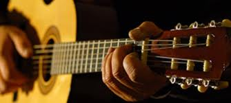
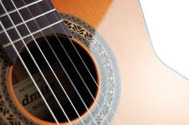
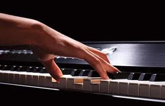
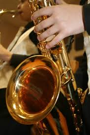
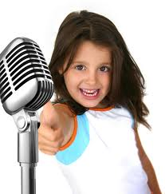
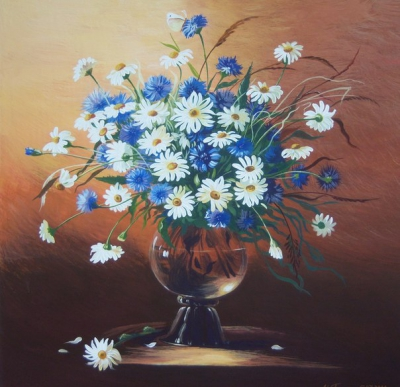

Научиться играть на гитаре реально в любом возрасте. Нужно просто сделать твердый и уверенный шаг к цели. Игра на этом инструменте одинаково интересна как подростковому поколению, так и молодежи и старшему поколению.
Гитара – это инструмент, который может пригодиться в абсолютно любой ситуации: как в компании друзей, в походе, так и на сцене, так что пренебрегать ею, выбирая себе инструмент для обучения, не стоит. Она является наиболее хорошо усваиваемым , легко переносимым и универсальным музыкальным инструментом.
Обучение зависит от желания ученика, педагога, который сумеет найти индивидуальный подход к ученику и очень много практики.Правильно настроить установку пальцев на грифе, обучить простым аккордам, пройти индивидуальную программу и подготовить почву для сложных композиций – это основной курс ученика, за которым по желанию ученика могут продолжаться усиленные уроки гитары.
После тяжелого дня вы не только сможете поднять всем настроение, но и развеселить, снять накопившуюся усталость.
Главная задача педагога - сделать игру на фортепиано приятным и увлекательным занятием для ученика. В конечном счете - сделать занятия музыкой увлечением жизни. И, конечно, чтобы выполнение домашнего задания больше походило на приятный досуг, на столь же интересный процесс, как игра с игрушками или чтение любимых книг.
Прежде всего, надо добиться, чтобы ребенок воспринимал занятия музыкой как свою и только свою задачу, педагогу в этом случае отводится роль помощника. Ребенок обязательно должен сам сказать, чего именно он хочет, желание заниматься должно исходить только от него. В первую очередь, учитель должен предлагать помощь, соучастие, постоянно вселять в ученика уверенность в том, что у него все получится самостоятельно, подбирать задания в соответствии с желаниями и способностями ребенка.
Например, если у ребенка хороший музыкальный слух, то ему легче научиться играть на фортепиано, подбирая музыку самостоятельно. Значит, начать обучение лучше именно с этого. Если у него не развит слух, то ему легче играть по нотам, но задачей педагога становиться развитие его слуха. Уроки никогда не похожи один на другой , если учитывать индивидуальность, способности и возраст каждого ученика.
Большой акцент делать на усидчивость ,на умение получать радость от того, что делаешь (несмотря на необходимость повторять упражнения на фортепиано по много раз) - радоваться процессу, а не результату. Это очень важно, потому что процесс освоения, изучения каждого отдельного произведения длителен, а как учебный процесс в целом - постоянен.
Саксофон – инструмент уникальный. Одним своим видом он приковывает к себе взгляды. А звуки, льющиеся со сцены, чаруют и захватывают дух, заставляя сердце биться быстрее, а душу петь в унисон с саксофоном. После выступления саксофониста не останется ни одного равнодушного в зале.
Если выступает саксофонист - приходят не только любители шумных мероприятий, но и ценители тишины и хорошей музыки. Ибо любовь к саксофонной музыке можно назвать отличным проявлением хорошего музыкального вкуса.
Саксофон сконструирован в 1842 году бельгийским музыкальным мастером Адольфом Саксом. С середины XIX века саксофон используется в духовом оркестре, реже — в симфоническом, также в качестве солирующего инструмента в сопровождении оркестра (ансамбля).
Является одним из основных инструментов джаза и родственных ему жанров, а также эстрадной музыки. Инструмент обладает полным и мощным звучанием, певучим тембром и большой технической подвижностью. В современном джазе и эстрадной музыке саксофон остаётся одним из ведущих инструментов.
Голос является едва ли не самым выразительным музыкальным средством, для одних это профессиональный инструмент, для других хобби. Уроки вокала дают возможность непосредственно прикоснуться к прекрасному миру музыки не имея под рукой никаких музыкальных инструментов.

Это хорошая психо-физическая релаксация организма, снятие внутреннего напряжения, зажатости, усталости, возможность творческого самовыражения личности. Наверно поэтому уроки вокала всегда пользуются большой популярностью.
Получать удовольствие от красиво и правильно исполняемых вокальных произведений, радуя друзей и близких, можно, начав заниматься пением в любом возрасте. Голос каждого учащегося обладает индивидуальными качествами, например, диапазоном, тембром, подвижностью, дикцией.
Процесс рисования – это не только передача определённых черт, свойств, особенностей, но и момент активного вхождения в образ, когда перед ребёнком будто оживают мазки, линии, формы. Он развивают креативное развитие, развитие эмоциональной и зрительной чувствительности, зрительная память, способность увлекаться, удивляться, радоваться разнообразию красок, образов, звуков в окружающем мире, любоваться выразительностью линий, форм, цвета при рассмотрении предметов быта, картинок, иллюстраций, репродукций картин художников, развитие интереса к материалам, их свойствам, экспериментированию цветами,красками.
Занятия для детей всегда построены в увлекательной и непринуждённой игровой форме, что даёт возможность детям вовлекаться в процессы воспитания, развития и образования с неиссякаемым вдохновением и радостью. Таким образом, игровое обучение не только помогает созданию необходимой атмосферы для занятий, но и снятию внутренней скованности, а так же способствует социализации детей, воспитывает в них чувство толерантности, развивает навыки общения и регуляции совместной деятельности.
Идёт набор в эстрадный вокальный ансамбль девочек 12-13 лет . Занятия проводятся во вторник с 16:30 до 17:15 .
Дорогие друзья!!! Рады сообщить, что с 04 декабря 2016 года по 15 декабря 2016 года мы организовуем поездку на два конкурса в Венгрию и Италию. Приглашаем участников центра Gloria, вокалистов и коллективы разных номинаций поехать в группе вместе с нами. Количество мест ограничено!!! Ориентировочная стоимость поездки пока не известна. Следите за новостями.
Стоимость абонемента на месяц 2 раза в неделю - 400 грн.
Стоимость абонемента на месяц 2 раза в неделю - 400 грн.
г. Киев, Метро "Оболонь". Оболонский проспект 7-А, клуб "Алмаз"
Тел: +380937503678
E-mail: colbertanna@mail.ru